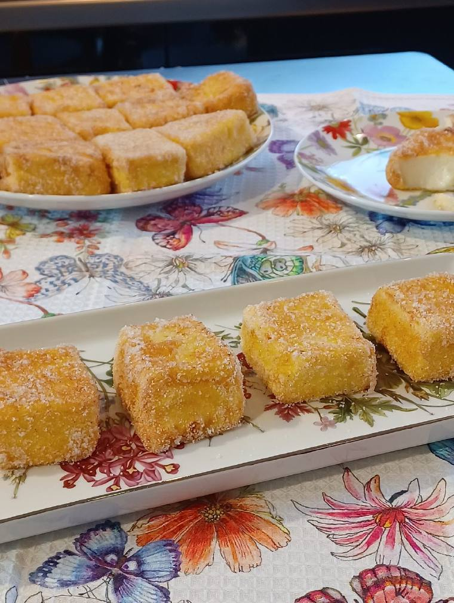

Desserts

Desserts
Leche frita
Lait frit du nord de l’Espagne
Préparation : 30 min
Repos : 3 h
Cuisson : 35 min
Ingrédients (pour 4 personnes)
- 1 l de lait
- 100 g de sucre
- 50 g de fécule de maïs
- 50 g de farine
- 2 œufs
- 1 bâton de cannelle
- 20 cl d’huile d’olive
- huile neutre pour le plat, farine pour enrober
- sucre et cannelle pour finir
Quantités adaptées. Les temps de cuisson ne sont pas recalculés.
- Délayer farine, fécule et sucre dans 25 cl de lait.
- Bouillir le reste 10 minutes avec la cannelle, le filtrer sur le mélange en fouettant.
- Cuire 10 minutes à feu doux sans cesser de remuer.
- Étaler dans un plat huilé, réfrigérer 3 heures.
- Couper en rectangles, passer dans farine et œuf battu, dorer à l’huile.
- Égoutter, poudrer de sucre et de cannelle.
D’après Spain.info, office espagnol du tourisme. Traduit et reformulé, repos au froid précisé.